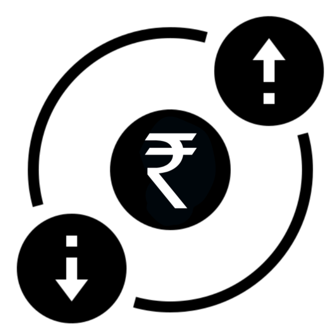

- Stock Market Knowledge
Workshop Structure
What's it like to run your own business?
Accounting
Excel Skills for Business
Introduction to Stock Picking
Financial Analyst
Investment Banking
Data Visualisation: Empowering Business with Effective Insights
Market Sales and Trading
Asset Management
Skills you will learn and practice during the Workshop
Financial Skill
- Stock Market Knowledge
- Company Analysis
- ECM (Equity Capital Markets) & DCM (Debt Capital Markets)
- Financial Modeling & Valuation Analysis
- Quantitative Analysis
- Portfolio Analysis
Technical Skills
- Microsoft Excel
- Microsoft Word
- Microsoft PowerPoint
- Power BI
- Tableau
- Analysis & Insights
Soft Skills
- Market Research
- Presentation Skills

- Strategic Thinking
- Writing an Investment Memo
- Objective and Operation Structure
- Understanding Client Investment Need
Communication Skills
- Cross-Team Collaborating
- Client Communication

- Reacting to Changes
- Relationship Building